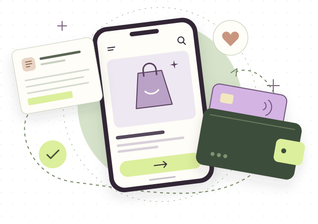

34
People in a 10-day diary study
Capture shopping and payment experiences across everyday situations.
Google · Consumer Payments · UX Research Internship
Starting with just a project title—“Gen Z, AI, and Payments”—I shaped a mixed-methods study and translated the evidence into actionable next steps for product partners.

Impact
Product and design partners used the insights to guide product direction and prototyping.
A selected overview of my process and contribution. Company-specific findings, recommendations, and internal materials are omitted.
“Gen Z, AI, and Payments.” That was the project title I was given at the start of my internship.
I turned that broad topic into questions about shopping context, payment choices, and expectations of AI, then designed a study to connect everyday behavior with broader patterns.
What shapes how Gen Z shops, chooses how to pay, and approaches emerging AI experiences?
Research and compare
Make a purchase decision
Select a payment method
Manage the experience afterward
I led a foundational study combining diary research, in-depth interviews, and a survey. Each method contributed a different view of the experience.
34
Capture shopping and payment experiences across everyday situations.
9
Explore the reasoning behind choices and what matters to participants.
500+
Extend the view across a larger sample, including older generations for context.
I led the study end to end, from research design and execution through synthesis and communication. My toolkit included dscout, User Interviews, Qualtrics, and presentation and prototyping tools.
I brought the research together around shopping context, payment needs, and attitudes toward emerging commerce. These broad questions describe the dimensions I explored.
Examine device choice and purchase context alongside payment behavior.
Explore expectations of AI-assisted shopping, trust, and consumer agency.
Consider the work of managing choices and moving between shopping touchpoints.
My readout started with the key takeaways, connected them to evidence, and closed with opportunities for product exploration.
I created four video stories from the diary study and used interactive prototypes alongside the presentation deck to bring the work into stakeholder conversations.
I presented to product, UX Design, and cross-functional partners, including leadership up to Director level. I also co-facilitated a Gen Z focus group to support engagement with the research.
I delivered recommendations and a next-step research roadmap, connecting the synthesis to continued product exploration.
Alongside the foundational study, I conducted a competitive review of payment autofill across browser and system interfaces. This work added an interaction-level perspective to my consumer research.
The lens
I examined the sequence of prompts and transitions around autofill, then summarized the review in a concise presentation.
Process schematic. Product-specific comparisons and recommendations are omitted.
Starting with an open-ended topic taught me to define a useful research question, connect different kinds of evidence, and give partners a practical next step.
I’m exploring UX research opportunities, and related roles in product insights, customer experience, and strategy.